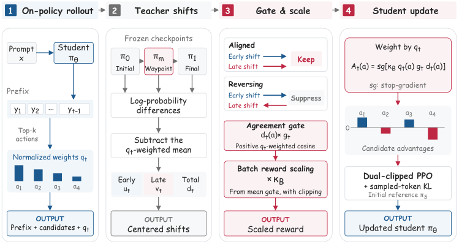

Imagine copying a coach's playbook changes over a season. Comparing only the first and last versions, you can't tell whether a play was improved steadily or flipped back and forth. Pull out the mid-season version as well: keep the changes that moved the same way twice, and ignore the ones that reversed.
한 시즌 동안 바뀐 코치의 작전집을 베낀다고 해 보자. 처음과 마지막 판만 비교하면 어떤 작전이 꾸준히 다듬어졌는지, 이리저리 뒤집혔는지 알 수 없다. 그래서 시즌 중간 판도 꺼내 본다. 두 번 다 같은 쪽으로 바뀐 것만 따르고, 도중에 방향이 뒤집힌 것은 무시한다.
How it works: three teacher snapshots, one gate작동 방식은 교사 스냅숏 셋과 게이트 하나
The Waypoint only decides how much to trust each local shift; the thing transferred is still the start-to-end change. It costs one extra frozen scoring pass.
중간 체크포인트는 각 지점의 변화를 얼마나 믿을지만 정하고, 옮기는 대상은 여전히 처음에서 끝까지의 변화다. 추가 비용은 고정된 교사로 한 번 더 채점하는 것뿐이다.

- Keep three checkpoints.체크포인트 세 개를 남긴다.From one Qwen3-4B RL run: before RL, step 600, and step 1200.Qwen3-4B의 한 RL 실행에서 RL 전, 600단계, 1200단계를 쓴다.
- Compare shifts on student tokens.학생 토큰 위에서 변화를 비교한다.Center early and late log-prob shifts over the student's top-16, weighted by student probability.학생 확률로 가중한 상위 16개 후보에서 초반·후반 로그확률 변화를 중심화한다.
- Gate, rescale, update.게이트를 걸고, 크기를 맞추고, 업데이트한다.Gate = max(0, cosine); rescale per batch; train with dual-clipped PPO plus KL to the initial student.게이트는 max(0, 코사인)이고, 배치마다 크기를 맞춘 뒤, 처음 학생과의 KL을 더한 이중 클리핑 PPO로 학습한다.
Key evidence: the gate must match its own prefix핵심 근거는 게이트가 자기 위치에 맞아야 한다는 것
Shuffling gates across prefixes is worse than having no gate at all. So the gain comes from where the agreement is measured, not from the gate's overall scale.
게이트를 다른 위치와 뒤섞으면 아예 게이트가 없는 것보다 나쁘다. 그러니 이득은 게이트의 전체 크기가 아니라 일치도를 어디서 쟀는지에서 나온다.
Results: students pass their smaller teacher학생이 더 작은 교사를 넘어선다
Waypoint-OPD tops every student size, and the 14B student beats its 4B teacher on all seven math benchmarks. It transfers the change, not the teacher's absolute level.
Waypoint-OPD는 모든 학생 크기에서 1위이고, 14B 학생은 수학 벤치마크 7개 모두에서 4B 교사를 넘는다. 교사의 절대 수준이 아니라 변화를 옮기기 때문이다.
| Method | Qwen3-8B | Qwen3-14B | Qwen3-30B-A3B |
|---|---|---|---|
| Base student | 26.04 | 27.32 | 28.03 |
| OPD (imitate Final) | 51.04 | 56.17 | 51.22 |
| OPD² | 51.46 | 52.83 | 52.68 |
| Direct-OPD | 53.96 | 57.61 | 55.96 |
| Waypoint-OPD | 56.14 | 59.20 | 57.85 |
If you distill from an RL run, keep one intermediate checkpoint. Agreement between early and late changes is a cheap, verifier-free signal for which token-level updates are worth copying.RL 실행에서 증류한다면 중간 체크포인트를 하나 남겨 두자. 초반 변화와 후반 변화의 일치도는 어떤 토큰 단위 변화를 옮길 가치가 있는지 알려 주는, 검증기 없이 얻는 값싼 신호다.
Student checkpoints are selected on AIME 2024, which is also one of the seven reported benchmarks, and results come from one teacher run with no reported seed repeats. All students are larger Qwen3 models, so this is weak-to-strong transfer, not compressing into a small student.학생 체크포인트를 AIME 2024로 골랐는데, 이는 보고한 벤치마크 7개 중 하나이기도 하다. 결과는 교사 RL 실행 하나에서 나왔고 시드 반복도 보고하지 않았다. 학생이 모두 교사보다 큰 Qwen3 모델이라, 작은 학생으로 압축하는 문제가 아니라 약한 모델에서 강한 모델로 옮기는 문제다.